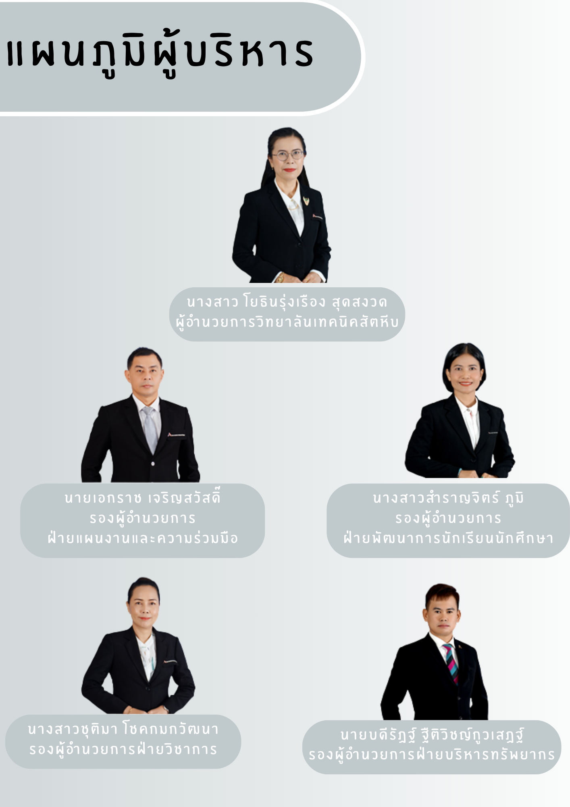

ทำเนียบผู้บริหาร
- 1. นายประพัฒน์ แสงอนิษ พ.ศ. 2512 - พ.ศ. 2513
- 2. นายสววน แก้วบรรดต พ.ศ. 2513 - พ.ศ. 2514
- 3. นายสุกูล เวชชจักร พ.ศ. 2514 - พ.ศ. 2519
- 4. นายอรุง พาลสุวรรณ พ.ศ. 2519 - พ.ศ. 2522
- 5. นายอรุณ บุญลา พ.ศ. 2520 - พ.ศ. 2522
- 6. นายสววน บุญปิยทัศน์ พ.ศ. 2522 - พ.ศ. 2525
- 7. นายชิตเฉลิม ชิตวณิกิจ พ.ศ. 2525 - พ.ศ. 2531
- 8. นายวิชัย ป้อมประเสริฐ พ.ศ. 2531 - พ.ศ. 2535
- 9. นายสรณะ วันพระพงษ์ พ.ศ. 2535 - พ.ศ. 2538
- 10. นายภราดรสวัสดิ์ กิพงค์ภาวา พ.ศ. 2538 - พ.ศ. 2540
- 11. นายสมศักดิ์ สุทธิสมบัติพันธ์ พ.ศ. 2540 - พ.ศ. 2541
- 12. นายพินิจ จงไพบูลย์สวัสดิ์ พ.ศ. 2541 - พ.ศ. 2545
- 13. นายสำเร็จ อนุสาหะกุล พ.ศ. 2545 - พ.ศ. 2548
- 14. นายสมชาย ธำรงอารี พ.ศ. 2548 - พ.ศ. 2556
- 15. นายวัชรินทร์ ศิริพลาพันธุ์ พ.ศ. 2556 - พ.ศ. 2559
- 16. นายศักดิ์ชัย ธีระประทีป พ.ศ. 2559 - พ.ศ. 2562
- 17. นายวิชัย ยอดสิริไพศาล พ.ศ. 2562 - ปัจจุบัน
- 18. นางอรทัย โยธารุ่งโรจน์สุดสววน พ.ศ. 2562 - ปัจจุบัน